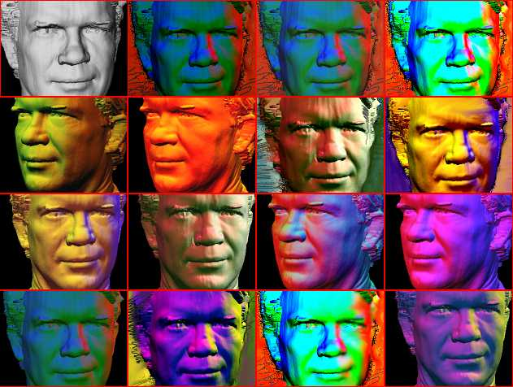
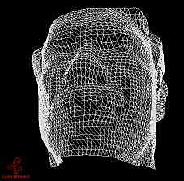
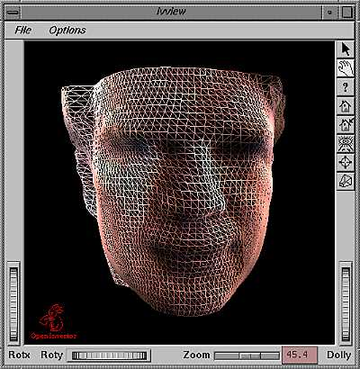

With the advent of Cyberware's 3D Scanner, human heads along with other smallish objects can be digitized rather quickly into the digital domain. This technology was brought to the SGI campus sometime in 1992 when the Grateful Dead needed to digitize their heads for special morphing effects to be shown at their concerts. It was because of this opportunity that a handful of SGI employees were able to get their heads digitized. One of them of course was Ed.

Along comes SGI's IRIS Inventor which made it possible to interactively move objects and light sources in a 3D scenes very easily. Ed's data was loaded into Inventor SceneViewer to set up the proper composition and lighting.

Multiple color light sources were used.. mostly spotlights and directional lights. The academically interesting part of these images is that the colorful shading on Ed's face were all produced through IrisGL's gouraud shading. This is much more sophisticated and most likely, more accurate than post-processing using color curves in Photoshop for instance. It's also more cool this way :-)
After the proper lighting colors and directions were chosen, a snapshot of the framebuffer was captured and imported into the paint program Creative License.
One thing great about Creative License is its ability to simulate traditional media types without cumbersome filters. By controlling ink flow rate, dryness, size, shape, and pattern parameters, the background was drawn around Ed carefully. Colors were picked to complement and enhance the colorful lighting on Ed's face. Keep in mind that no masks were used to do the compositing.
Several versions of Ed in assorted colors were done before I picked the best 4 to composite together, forming a Warholish piece. (I wonder whether Andy would've been insulted or delighted?)
(click for bigger view: jpeg ~73kb)
This snapshot was done using imgworks' Find Edge option which makes Ed look even more cool!
(click for bigger view: jpeg ~100kb)
Here is a postcard from the Museum of Modern Art Gallery where the "Ed Exhibit" was showcased recently. There was so much interest in it that the painting next to it was barely noticed.)


{kind=link}
{kind=link}
{kind=link}